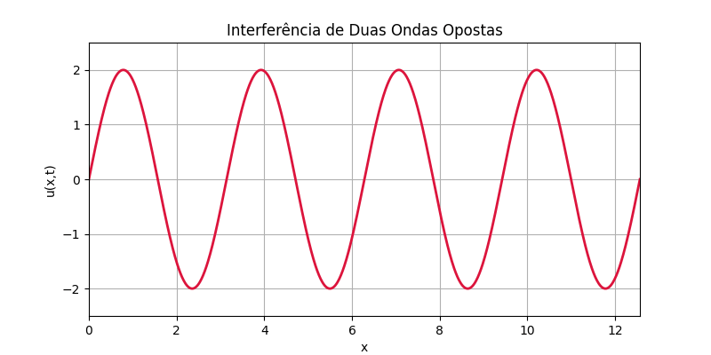

Neste blog, você encontrará conteúdos de Matemática, Estatística e Física desenvolvidos com rigor, fundamentação teórica e uma abordagem didática. A proposta é combinar clareza conceitual com uma apresentação visual profissional, utilizando ferramentas como LaTeX, Quarto, Python e R.
O objetivo é explorar ideias profundas com simplicidade, intuição e beleza — por meio de explicações acessíveis, visualizações gráficas, cursos completos com exercícios resolvidos e guias de leitura estruturados.
🌟 O que você vai encontrar aqui:
- ✨ Dicas de LaTeX e Quarto para visualizações
- 🧠 Conceitos matemáticos ilustrados passo a passo
- 📘 Experimentos com ensino visual e gráfico
- 🧮 Matemática acessível e rigorosa
- 🔭 Física explicada com contexto e história
- 📊 Estatística com foco em aplicações reais
- 💻 Programação em R, Python, Julia e Shell
- 📝 Reflexões sobre ciência, método e linguagem
“A beleza é o primeiro teste: não há lugar permanente no mundo para matemática feia”
— G. H. Hardy
“O universo não pode ser lido até que tenhamos aprendido a linguagem e nos familiarizado com os caracteres em que está escrito. Ele está escrito em linguagem matemática, e suas letras são triângulos, círculos e outras figuras geométricas, sem as quais é humanamente impossível compreender uma única palavra.”
— Galileu Galilei
Ao longo dos séculos, certas fórmulas se destacaram por sua beleza, profundidade e impacto. Este post celebra essas joias da matemática e da física.
🧠 A Identidade de Euler
\[ e^{i\pi} + 1 = 0 \]
Conecta os cinco números mais fundamentais da matemática em uma equação simples e elegante.
📡 A Equação de Onda
\[ \frac{\partial^2 u}{\partial t^2} = c^2 \frac{\partial^2 u}{\partial x^2} \]
Modela vibrações, sons, luz e outras ondas. Aparece naturalmente em física e equações diferenciais.
🔢 A Fórmula de Ramanujan para \(\frac{1}{\pi}\)
\[ \frac{1}{\pi} = \frac{2\sqrt{2}}{9801} \sum_{k=0}^{\infty} \frac{(4k)!\,(1103 + 26390k)}{(k!)^4\,396^{4k}} \]
Uma das fórmulas mais rápidas para calcular \(\pi\), descoberta por Ramanujan com intuição extraordinária.
🌍 Importância da Distribuição Normal
A distribuição normal é um modelo estatístico essencial porque descreve com precisão muitos fenômenos do mundo real — tanto naturais quanto sociais. Ela surge, sobretudo, quando várias causas aleatórias e independentes influenciam um resultado final. Nessas situações, os dados tendem a se concentrar em torno de uma média, formando a clássica curva em forma de sino.
🔎 Por que isso importa?
Porque a normalidade simplifica a análise estatística e viabiliza o uso de ferramentas poderosas de inferência.
📌 Exemplos práticos:
📚 Notas em provas padronizadas: os escores se distribuem em torno da média, com poucos alunos obtendo notas muito altas ou muito baixas.
🌿 Altura de plantas de uma mesma espécie cultivadas sob condições semelhantes tende a se agrupar em torno de um valor central.
📉 Retornos de ativos financeiros (ações, moedas) se aproximam de uma curva normal em períodos curtos — embora com ressalvas quanto a eventos extremos.
📈 Com a suposição de normalidade, podemos:
Calcular probabilidades com fórmulas e tabelas conhecidas;
Estimar intervalos de confiança;
Aplicar testes de hipóteses;
Visualizar dados de forma clara e comparável.
🧠 Este exemplo mostra o poder da visualização computacional para entender fenômenos físicos e faz parte dos estudos sobre visualizações no blog.
Na física, a interferência ocorre quando duas ondas se encontram no espaço. O padrão resultante depende da fase relativa entre elas.
A superposição de duas ondas senoidais com mesma frequência pode ser representada como:
\[ u(x,t) = A \sin(kx - \omega t) + A \sin(kx + \omega t) \]
Essa soma resulta numa onda estacionária (que oscila mas não se propaga):
\[ u(x,t) = 2A \sin(kx) \cos(\omega t) \]
🎬 Abaixo, veja a animação da interferência entre duas ondas idênticas que se propagam em direções opostas:

# interferencia_ondas.py
import numpy as np
import matplotlib.pyplot as plt
import matplotlib.animation as animation
# Domínio
x = np.linspace(0, 4 * np.pi, 1000)
A = 1
k = 2
omega = 2
fig, ax = plt.subplots(figsize=(8, 4))
line, = ax.plot([], [], lw=2, color='crimson')
ax.set_xlim(0, 4 * np.pi)
ax.set_ylim(-2.5, 2.5)
ax.set_title("Interferência de Duas Ondas Opostas")
ax.set_xlabel("x")
ax.set_ylabel("u(x,t)")
ax.grid(True)
def init():
line.set_data([], [])
return line,
def animate(i):
t = i * 0.1
y1 = A * np.sin(k * x - omega * t)
y2 = A * np.sin(k * x + omega * t)
y = y1 + y2 # Superposição das ondas
line.set_data(x, y)
return line,
ani = animation.FuncAnimation(fig, animate, init_func=init, frames=100, interval=50, blit=True)
ani.save("interferencia_ondas.gif", writer='pillow', fps=20)🆕 Últimos Posts
- 🧠 🔢 Módulo 1.2: Conjuntos Numéricos – Aprofundamento
- 🎓 📊 Curso de Estatística: A Distribuição Normal (Parte 3): Gráficos, TCL e Normalidade Aproximada
- 🎓 📊 Curso de Estatística: A Distribuição Normal (Parte 2): Escore-z e Tabela Z
- 🎓 📊 Curso de Estatística: A Distribuição Normal (Parte 1): Introdução à Distribuição Normal
- 🔢 Módulo 1.2: Conjuntos Numéricos
- 🧠 Módulo 1.1: O que é Cálculo? História e aplicações
- 🎓 Curso de Cálculo Diferencial e Integral
- 📚 🌠 Relatividade Geral — Parte 1: O Problema da Gravidade
- 📘 👨💻 📄 Modelo de Markdown com Quarto – Parte 2
- 🧭 📚 🌠 Guia de Leitura da Série Relatividade Geral
Esta seção é atualizada automaticamente a cada nova publicação.
Blog do Marcellini — Explorando a Matemática, a Estatística e a Física com Rigor e Beleza
Criado por Blog do Marcellini com ❤️ e código.